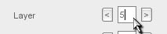

Figure 1.1.1
Figure 1.1.2 
Figure 1.1.3
In T2D objects can exist on different layers in the view. The lower the number, the closer the layer is to the front. There are 32 layers that range from layer 0 (the closest to the viewer and default, so whatever is on this layer will be shown in front of the other layers) to layer 31 (the furthest layer, anything on this layer will be shown behind all other layers). Setting things on different layers can give us some neat effects. The default layer is 0.